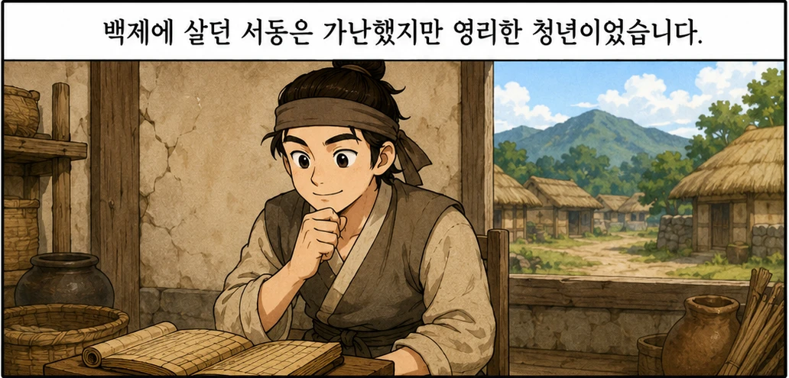
1 서동 소개
백제에 살던 서동은 가난했지만 영리한 청년이었습니다.
Reading Cuttoon
교재 원본 읽기 흐름을 9개의 컷으로 확인합니다. 그림을 보며 사건 순서와 문장을 함께 다시 읽어 보세요.
Original Sheets
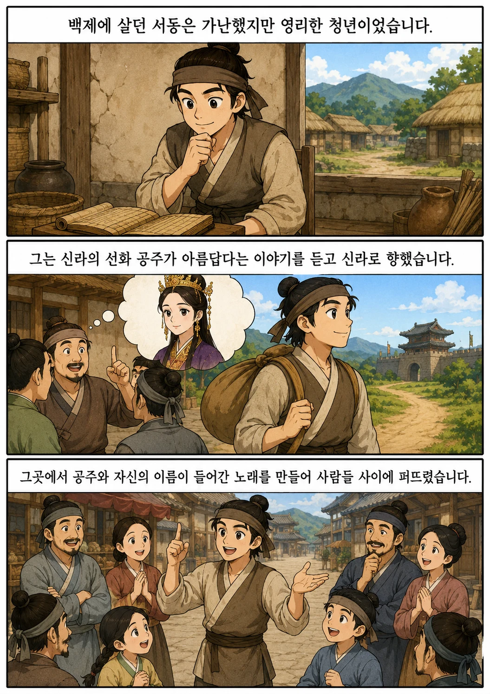
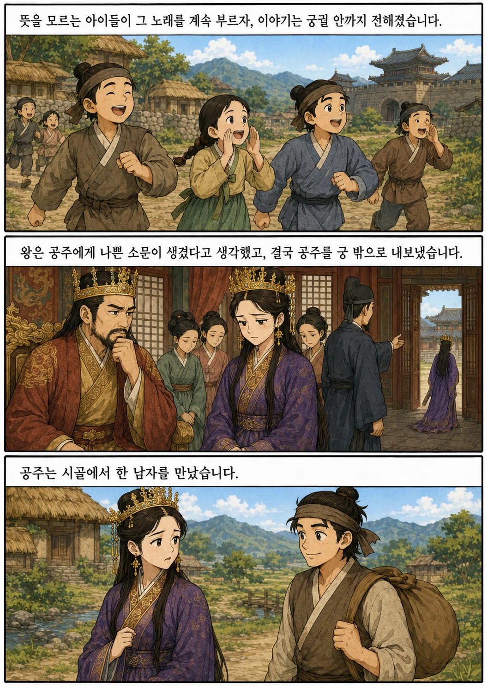
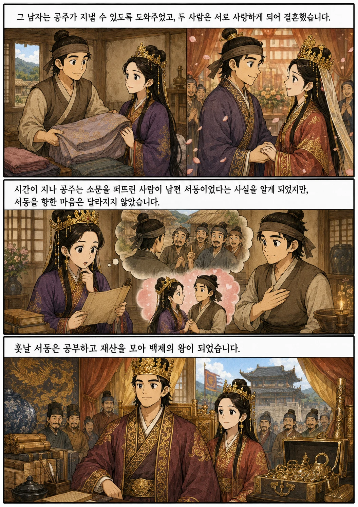
Cut Reading

백제에 살던 서동은 가난했지만 영리한 청년이었습니다.
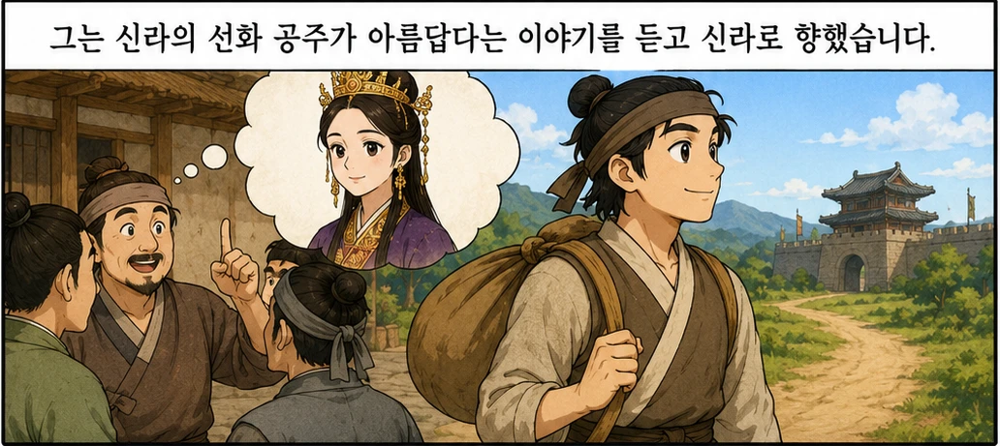
그는 신라의 선화 공주가 아름답다는 이야기를 듣고 신라로 향했습니다.
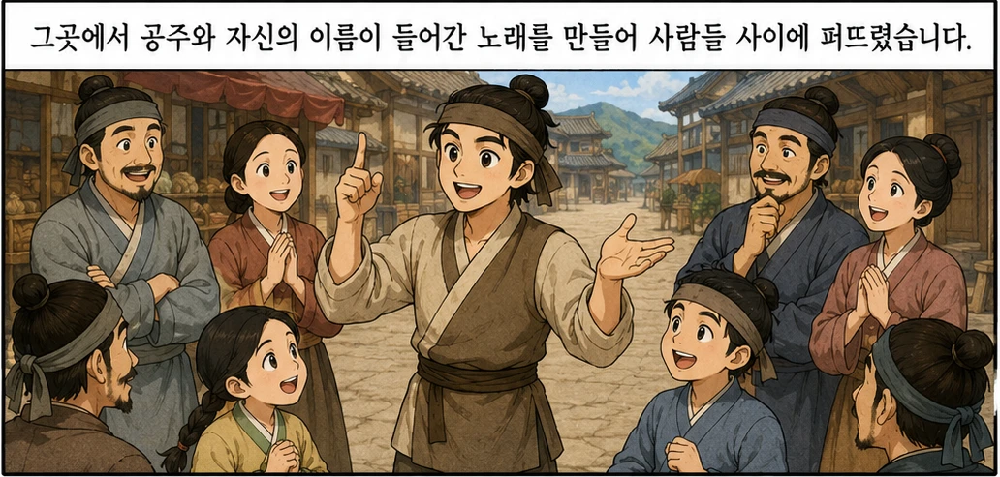
그곳에서 공주와 자신의 이름이 들어간 노래를 만들어 사람들 사이에 퍼뜨렸습니다.
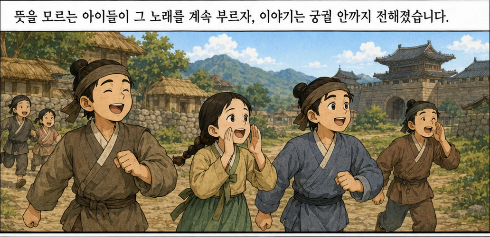
뜻을 모르는 아이들이 그 노래를 계속 부르자, 이야기는 궁궐 안까지 전해졌습니다.
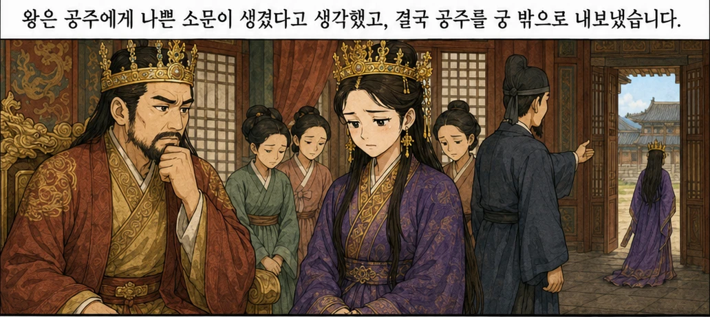
왕은 공주에게 나쁜 소문이 생겼다고 생각했고, 결국 공주를 궁 밖으로 내보냈습니다.
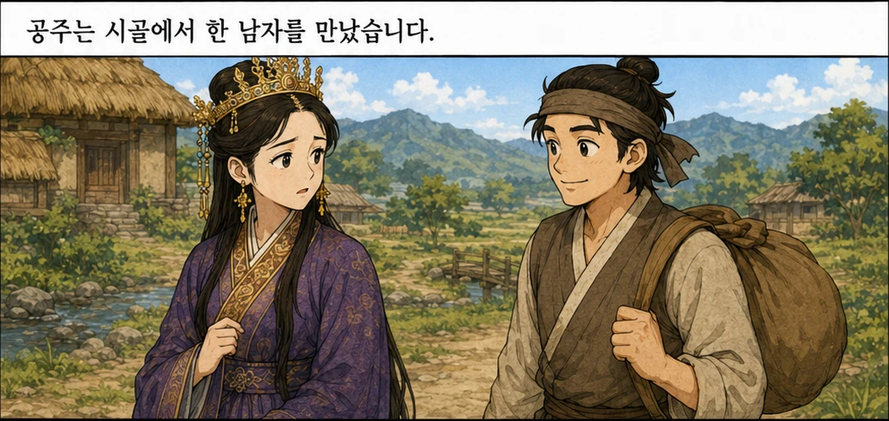
공주는 시골에서 한 남자를 만났습니다.
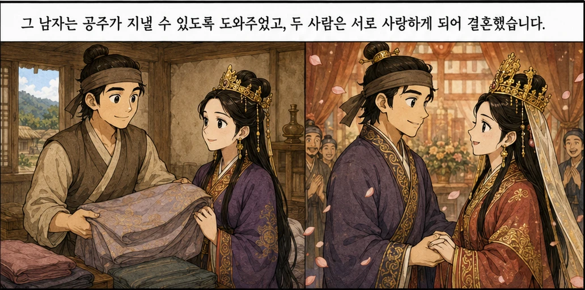
그 남자는 공주가 지낼 수 있도록 도와주었고, 두 사람은 서로 사랑하게 되어 결혼했습니다.
시간이 지나 공주는 소문을 퍼뜨린 사람이 남편 서동이었다는 사실을 알게 되었지만, 서동을 향한 마음은 달라지지 않았습니다.
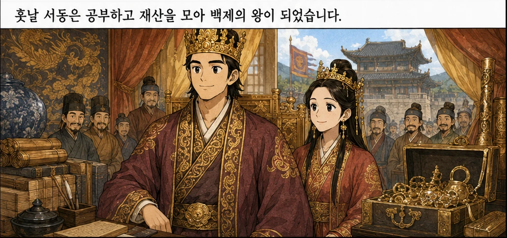
훗날 서동은 공부하고 재산을 모아 백제의 왕이 되었습니다.